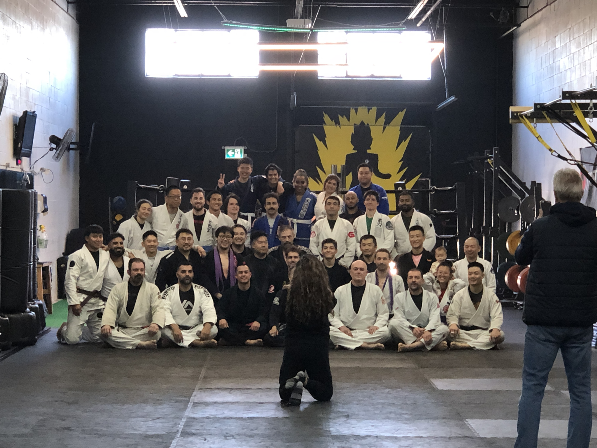
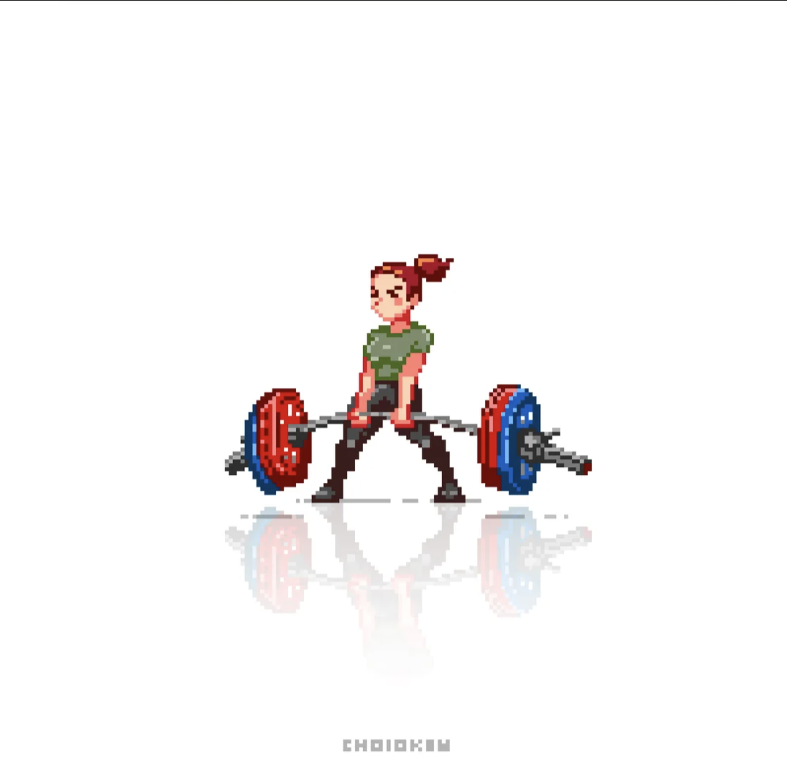
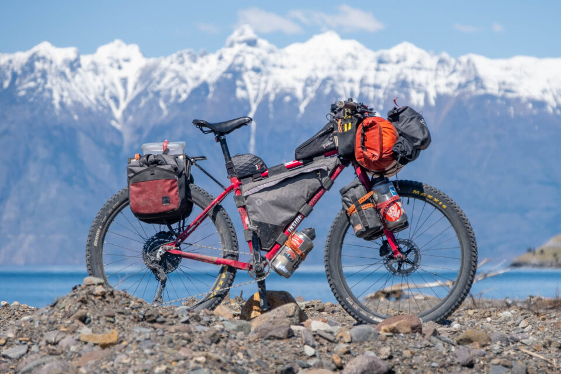
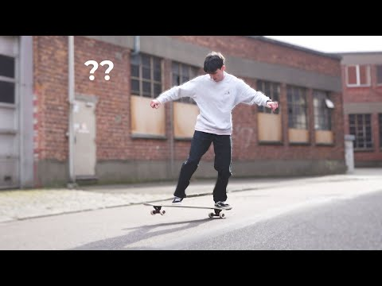
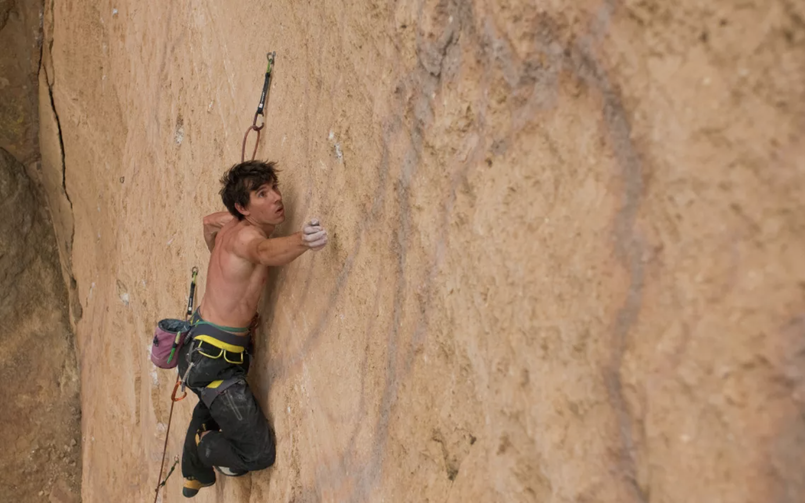
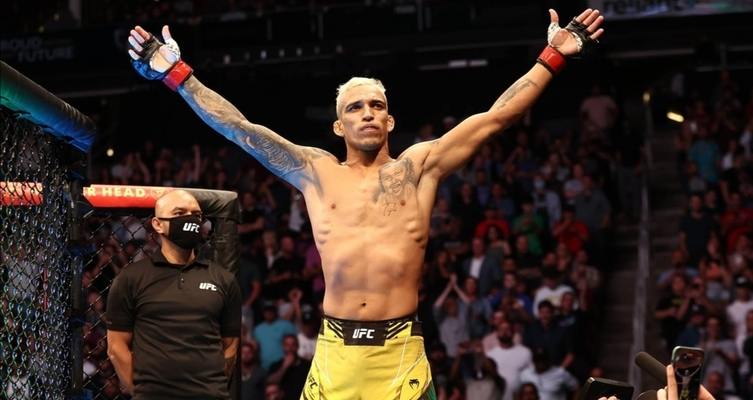

White belt @ UofT Grappling Club. 400+ hours into the sport and still learning! This is my favourite sport by far, because, to me, BJJ is solely a testament of my passion and work ethic.
Favourite athlete: Craig Jones
Favourite submission: Far-side armbar
Favourite guard: De La Riva

Similar to BJJ, progressing in powerlifting is all about dedicating myself to the sport, and pushing myself to go to the gym, even when I don't feel like it. Also, I like how I'm able to optimize my workout routines to get the most out of every session!
Favourite lift: Deadlift
Squat: 200lbs, Bench, 195 lbs, Deadlift: 300lbs

Although I've only been bikepacking two times, with both being less then 50 km each, bikepacking has been a sport that captures how free I want my life to be. One day, I want to travel to all the countries of the world with only love in mind.
Favourite Route: England to Australia
Inspiration: https://youtu.be/V-yO1DcdUFQ?si=eOR-xMGutcE8IoE3

Longboarding is a sport that I've been doing for about 2 years now. It's my favourite way to commute anywhere, and I feel much more at ease doing it than any other sport.

Although my main sport is BJJ, I know that I would have been a climber in another universe. This, along with bikepacking, makes me feel more present than anything else on this earth. I like how natural it makes me feel.

Although I only train BJJ, I am a giant fan at how atheletes use multiple disciplines to tackle the same challenge, which is why I love MMA.
Favourite fighters: Charles Oliveira, Khabib Nurmagomedov, Merab Dvalishvili